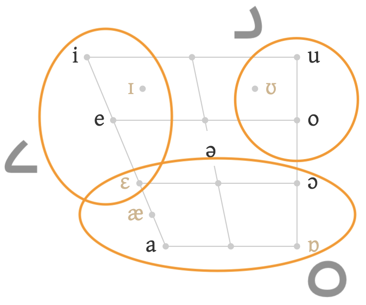
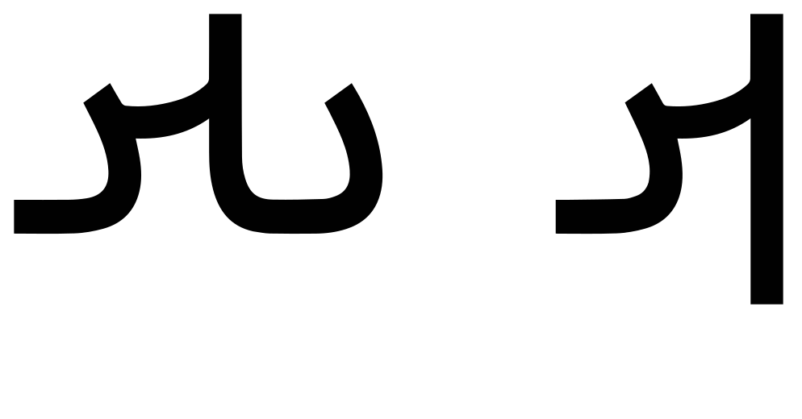
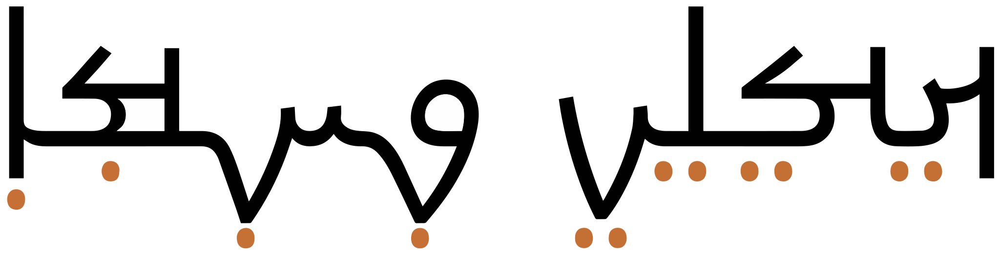
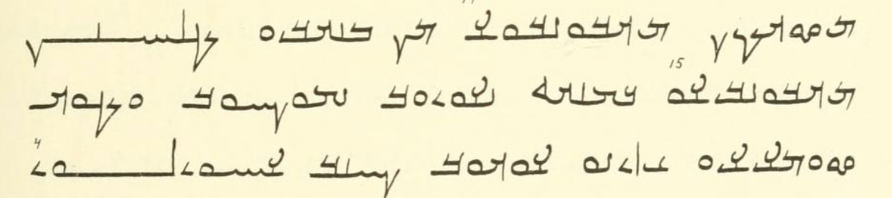
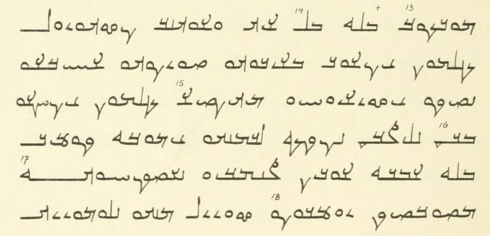
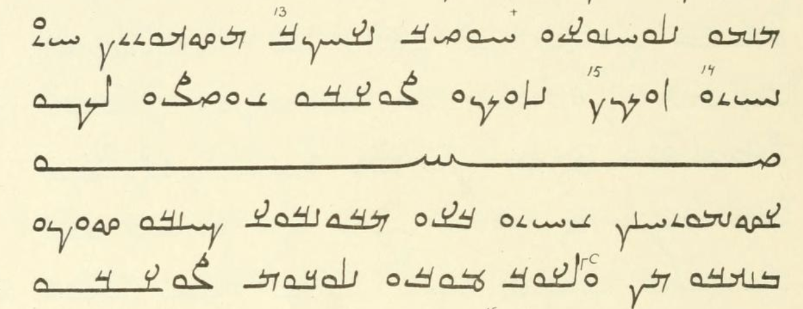
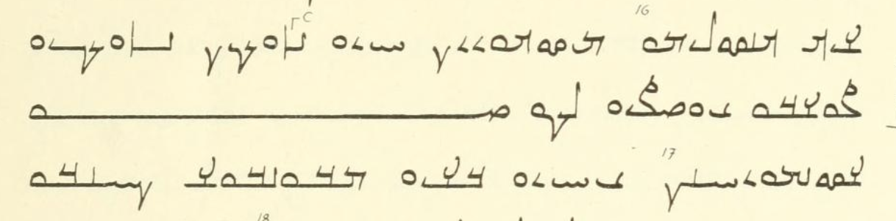
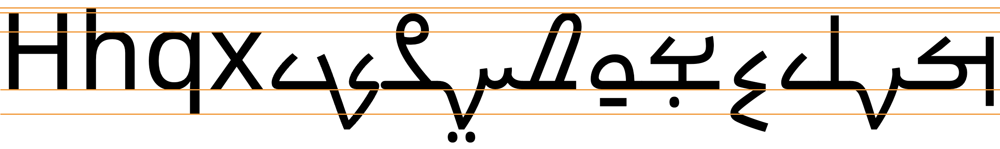

This page brings together basic information about the Mandaic script and its use for the Neo-Mandaic language. It aims to provide a brief, descriptive summary of the modern, printed orthography and typographic features, and to advise how to write Mandaic using Unicode.
The relatively small number of letters in Mandaic (especially for vowels) cover a fairly wide set of allophonic sounds. Differences in pronunciation also arise due to the dialect or accent of the speaker. Although these may be spelled out in some of the examples, it is best to assume that many of the letters described here represent more than one sound, and that the pronunciations given for the examples may differ for other speakers.
It was difficult to find word lists that show IPA pronunciations for Neo-Mandaic spellings, although there are lists of words that show IPA for transcriptions that appear to be close to transliterations. A Neo-Mandaic term with † alongside it indicates that the spelling has been guessed at, rather than copied.
Source: Paragraph 1, Unicode UDHR, article 1; paragraph 2, From a Masiqta hymn (Macuch 1967: 54, no.5. lines 1-3) in Daniels.
Usage & history
2ndC – today, but with limited usage (liturgical, endangered)
Phoenician
└ Aramaic
└ Mandaic
+ Hebrew
+ Nabataean
+ Syriac
+ Palmyrene
+ Hatran
+ Elymaic
+ Pahlavi
+ Kharosthi
+ Brahmi
The Mandaic script is used for writing Neo-Mandaic, an Iraqi language spoken by about 5,500 people, and is also the script of Classical Mandaic, the liturgical language of the Mandaean religion. Persecution and war over a long period has reduced the language to a severely endangered level. There may be 200 or less first language speakers of Mandaic.
ࡀࡁࡀࡂࡀābāgāMandaic alphabet
The origins of the script are not clear, but many scholars believe it to be descended from Aramaic via Parthian. Research has indicated that it has remained relatively unchanged since its initial development between the 2nd and 7th centuries CE.
The Mandaic script is an alphabet. This means that it is phonetic in nature, where each letter represents a basic sound. This is unusual among scripts of semitic origin. See the table to the right for a brief overview of features for the modern Neo-Mandaic orthography.
Mandaic text runs right-to-left in horizontal lines, but numbers and embedded Latin text are read left-to-right. There is no case distinction.
Words are separated by spaces, and contain a mixture of consonants and vowels, with diacritics to indicate vowel quality, gemination, or foreign sounds.
The script is cursive, but basic letter shapes don't change radically. In some letters, the joining edge of the glyph adapts to join with an adjacent character.
The standard Mandaic alphabet consists of 24 letters, since 24 is a significant number to Mandaeans, however this is only achieved by repeating the first letter of the alphabet, ࡀ[U+0840 MANDAIC LETTER HALQA], at the end, and including a ligature, ࡗ[U+0857 MANDAIC LETTER KAD].
Mandaic has 17 basic consonant letters. Similarly to Syriac, many of the consonant letters, especially the stops, represent more than one phoneme – typically a stop and a fricative. Particular phonemes and additional sounds used in Arabic and Persian can be indicated explicitly using an affrication mark added to consonants, and one extra character.
3 more special characters represent the sounds of grammatical syllables.
Gemination is not normally marked, but can be indicated using a combining mark.
Mandaic is an alphabet where vowels are written using 4 vowel letters, derived from consonants. The 4 vowel letters represent 6 phonemes, and various allophonic realisations depending on syllabic context or speaker location (see phonemesV). A seventh phoneme, ə, is unwritten.
Three of the 4 letters representing vowel sounds may represent one of two phonemes; the specific phoneme can be clarified for educational purposes using 085A.
The vowel letter, 084F, is used before 0849 and 0845 when they represent standalone vowels. Standalone vowels only occur in word-initial position.
Character index
Letters
Show
Consonants
ࡐ␣ࡁ␣ࡕ␣ࡃ␣ࡈ␣ࡊ␣ࡂ␣ࡒ␣ࡎ␣ࡆ␣ࡑ␣ࡔ␣ࡄ␣ࡌ␣ࡍ␣ࡓ␣ࡋ
Vowels
ࡉ␣ࡅ␣ࡀ␣ࡏ
Other
ࡖ␣ࡇ␣ࡗ␣ࡘ␣ـ
Combining marks
Show࡙␣࡛␣࡚
Punctuation
Show࡞
Other unconfirmed
،␣؛␣«␣»␣؟␣﴾␣﴿
Other
Show
To be investigated
(␣)␣,␣.␣/␣{␣}␣٠␣١␣٢␣٣␣٤␣٥␣٦␣٧␣٨␣٩␣٪␣۔␣‘␣’
Items to show in lists
Phonology
These sounds are for the Neo-Mandaic language.
Click on the sounds to reveal locations in this document where they are mentioned.
Phones in a lighter colour are non-native or allophones
.
Vowel sounds
Plain vowels
There is considerable allophonic variation in Neo-Mandaic vowels. fig_vowel_allophones shows common realisations of the basic sounds listed above, based on syllable type. Note that o, e, and a are very rare in open, accented syllables.h
Open syllable
i
u
ɔ
oː
e
a~æ
Open, accented syllable
iː
uː
ɔː
o
e
a~æ
Closed syllable
ɪ
ʊ
ʌ
ɛ
ɑ
Typical allophones based on syllable type for the primary vowels in Neo-Mandaic.h,59
Complex vowels
Häberlh,59 describes 5 diphthongs.
ɛɪ
ɔɪɔʊ
aɪaʊ
Consonant sounds
labial
dental
alveolar
post-
alveolar
palatal
velar
uvular
pharyngeal
glottal
stop
pb
td
kɡ
q
ejectives
tˤðˤ
affricate
t͡ʃd͡ʒ
fricative
fv
θð
sz sˤzˤ
ʃʒ
ɣ
χʁ
ħʕ
h
nasal
m
n
approximant
w
l
j
trill/flap
r
Tone
Neo-Mandaic is not a tonal language.
Structure
tbd
Alphabet
Click on the characters to find where they are mentioned in this page.
The Mandaic alphabet has 24 letters, since that number is symbolic to Mandaeans. To reach that number, the alphabet includes the ligature ࡖ and the first letter is repeated at the end of the alphabet.
ࡀ␣ࡁ␣ࡂ␣ࡃ␣ࡄ␣ࡅ␣ࡆ␣ࡇ␣ࡈ␣ࡉ␣ࡊ␣ࡋ␣ࡌ␣ࡍ␣ࡎ␣ࡏ␣ࡐ␣ࡑ␣ࡒ␣ࡓ␣ࡔ␣ࡕ␣ࡖ␣ࡀ
Vowels
Vowel summary table
The following table summarises the main vowel to character assigments.
The table shows only phonemic vowels, unless indicated otherwise. These vowels represent a variety of allophones – see vrange for more information. Hyphens are used to indicate word-initial or word-final forms. The right-hand column shows where the vocalisation mark can be used in educational texts to disambiguate the vowel sound.
The Mandaic Unicode block uses just 4 characters for vowels, however each vowel letter represents 2 phonemic vowel distinctions and a number of allophonic realisations, both in quality and vowel length (see vrange).
ࡉ␣ࡅ␣ࡀ␣ࡏ
The letters used for vowels all have their origin in consonants, but the two on the right are now used only for vowels. The two on the left, 0849 and 0845, are also used for the consonants or glides j and w, respectively.
0840 and 084F are available to use as vowels because the language dropped the glottal and pharyngeal sounds.
In addition to its use for standalone vowels (see standalone), 084F is used, according to Danielsh,512, to replace two adjacent 0849 vowels, and after consonants with a point below the line (such as 084A). It can apparently also be used instead of 0849 0840 at the end of a word to indicate that this is not the sound -ja.
Observation: Looking at text samples (such as the UDHR, for which i have no IPA transcription) it's not clear that the above covers all the uses of 084F adequately. More information is needed.
Although the script is basically alphabetic, vowel sounds are not always shown. For example, the i is not shown in ࡌࡍmnminfrom
Two ligatures encoded in the Unicode block have unwritten vowel sounds, ie.
ࡖḏdi
ࡗkḏi
Vowel ranges
fig_vowel_cloud shows how 3 of the vowel letters encompass a range of sounds, rather than representing a single, specific sound. The 6 darker phones within the circles are phonemic vowel distinctions, whereas the lighter phones are allophonic realisations. In each circled case, two primary vowel sounds are associated with a given letter. There can also be long and short versions of the primary vowels.

Sound ranges associated with vowel letters.
Observation: Need to confirm that ɛ falls within 2 circles.
Vowel disambiguation
Where needed in educational texts, 085Aw can be used to distinguish primary vowel sounds for two letters, and the length of the third.
e is indicated by 0849 085A, thereby distinguishing between ࡁࡉbiࡁࡉ࡚be
o is indicated by 0845 085A, thereby distinguishing between ࡁࡅbuࡁࡅ࡚bo
a is indicated by 0840 085A, thereby distinguishing between ࡁࡀbɔࡁࡀ࡚ba
Standalone vowels
Standalone vowels only occur in word-initial position in Neo-Mandaich,72. Two of the vowel letters are commonly preceded by ࡏ in word-initial position. That letter on its own represents an e sound, however Danielsd,512 says that this usually represents a prothetic vowel before the t-prefix in passive verbs or before a monoconsonantal word.
Observation: Does 084F on its own therefore represent the vowel ə rather than one of the sounds covered by the 0849 range?
This gives the following typical forms:
iࡏࡉ
uࡏࡅ
eࡏ
aࡀ
Vowel length
According to Häberlh,75, vowel length is entirely predictable in Neo-Mandaic and depends entirely upon the placement of the accent and the syllable structure. Vowels in open, accented syllables are long, and pretonic, open syllables have short vowels.
Mandaic has no regular mechanisms in the orthography to indicate vowel length.
Vowel sounds to characters
This section maps Neo-Mandaic vowel sounds to common graphemes in the Mandaic orthography. Neo-Mandaic has much allophonic variation, but few vowel letters; therefore this chart shows groups of sounds.
The columns run right to left and indicate typical word-initial, word-medial, and word-final usage. The joining forms shown are illustrative; alternative shapes may occur Click on a grapheme to find other mentions on this page (links appear at the bottom of the page). Click on the character name to see examples and for detailed descriptions of the character(s) shown.
i iː ɪ
0849 0840
ࡔࡀࡐࡋࡉࡀ
084F for long iː.
0847 exclusively as the 1st person singular marker iː.
0849
ࡔࡉࡕࡀ
084F is preferred after a consonant with a point below the line, ie. ࡊࡏkʿ, ࡍࡏnʿ, ࡐࡏpʿ, and ࡑࡏᵴʿ.
084F 0849
ࡏࡉࡍࡀ†
u uː ʊ
0845
ࡏࡉࡄࡋࡅ†
0845
ࡀࡎࡅࡕࡀ ࡍࡉࡄࡅࡉࡋࡉࡊ
084F 0845
ࡏࡅࡕࡓࡀ
e ɛ
TBC
0849
ࡔࡉࡃࡕࡀ
084F 0849 where it appears alongside i.
0849 085A in educational texts to indicate that the sound is e rather than i.
ࡔࡉ࡚ࡃࡕࡀ
084F
ࡏࡕࡌࡀࡋ
oː o ʌ
Does not occurh,72
0845
ࡉࡅࡌࡀ
0845 085A in educational texts to indicate that the sound is o rather than u.
ࡉࡅ࡚ࡌࡀ
084F 0845
ࡏࡅࡓࡅࡐࡕࡀ
ɔː ɔ
0840
ࡋࡉࡁ࡛ࡀ
0840
ࡊࡋࡀࡕࡀ
0840
ࡀࡄࡀ†
aː a æ ɑ
0840
ࡉࡀࡄࡓࡀ
0840
ࡑࡅࡁࡀࡄ
0840 085A in educational text to indicate a short a.
ࡑࡅࡁࡀ࡚ࡄ
0840
ࡀࡌࡀࡉ
Consonants
Consonant summary table
The following table summarises the main consonant to character assigments.
The right-hand column lists sounds that only occur in words from other languages, principally Arabic or Persian.
The Mandaic block has 17 basic, native consonants. Whereas the table just above takes you from sounds to letters, the following simply lists the basic consonant letters.
ࡐ␣ࡁ␣ࡕ␣ࡃ␣ࡈ␣ࡊ␣ࡂ␣ࡒ␣ ␣ࡎ␣ࡆ␣ࡑ␣ࡔ␣ࡄ␣ ␣ࡌ␣ࡍ␣ ␣ࡓ␣ࡋ
Special characters
ࡖ␣ࡇ␣ࡗ
ࡇ[U+0847 MANDAIC LETTER IT]ẖ only appears at the end of personal names or at the end of words to indicate the third person singular suffix.
ࡖ[U+0856 MANDAIC LETTER DUSHENNA] is a letter of the alphabet, but it has a morphemic function, being used to write the relative pronoun and genitive exponent ḏ-, eg. ࡖࡍࡐࡀࡒࡕḏnpāqtdinpaqtwho left youࡖࡎࡉࡍࡀḏsinādisinaof hatred
Neo-Mandaic is heavily influenced by Arabic and Persian languages, and they can bring additional sounds into the text via loan words or dialectal variations. Mostly, the non-native sounds are written using ordinary Mandaic letters, but diacritics can be used to point out particular pronunciations (see Cdisambuators).
One special character was added to the repertoire. It is borrowed from ع[U+0639 ARABIC LETTER AIN] to represent the Arabic sound ʕ.
ࡘ
Consonant disambiguators
Educational texts may include diacritics to disambiguate the sounds of various consonants, including sounds typically used only in loan words. 0859 indicates the following sounds:
ࡔ࡙␣ࡐ࡙␣ࡕ࡙␣ࡃ࡙␣ࡈ࡙␣ࡑ࡙␣ࡂ࡙␣ࡊ࡙␣ࡄ࡙
Also, although gemination is not usually marked, 085B can be used to indicate gemination of a consonant (referred to by native writers as 'hard' pronunciation).
ࡋࡉࡁ࡛ࡀ
Consonant clusters
Häberlh,729 provides some detailed information about rules for consonant clusters.
Consonant length
Gemination occurs in Neo-Mandaic words, but is not usually marked.
In educational texts 085B can be used to indicate gemination of a consonant (referred to by native writers as 'hard' pronunciation).
ࡋࡉࡁ࡛ࡀ
Geminated ࡕ is pronounced χt.h,728
Consonant sounds to characters
This section maps Neo-Mandaic vowel sounds to common graphemes in the Mandaic orthography.
The right-hand column shows the various joining forms for each letter.
Click on a grapheme to find other mentions on this page (links appear at the bottom of the page). Click on the character name to see examples and for detailed descriptions of the character(s) shown. Sounds listed as 'infrequent' are allophones, or sounds used for foreign words, etc.
Stops
p
0850
ࡐࡀࡂࡓࡀ
085008500850 ⏴
b
0841
ࡁࡀࡁࡉࡋ
084108410841 ⏴
t
0855
ࡕࡉࡁࡉࡋ
085508550855 ⏴
tˤ
0848
084808480848 ⏴
d
0843
ࡃࡓࡀࡔࡀ
084308430843 ⏴
k
084A
ࡊࡀࡄࡍࡀ
084A084A084A ⏴
ɡ
0842
ࡂࡀࡐࡀ
084208420842 ⏴
q
0852
ࡒࡀࡌࡉࡕ
085208520852 ⏴
Affricate
t͡ʃ
0854
0854 0859 in educational texts.
08540854 ⏴
d͡ʒ
0854
0854 0859 in educational texts.
08540854 ⏴
Fricatives
f
0850
0850 0859 in educational texts.
ࡑࡅࡐ࡙ࡓࡀ†
085008500850 ⏴
v
0841
ࡂࡅࡁࡓࡀ†
084108410841 ⏴
0845
ࡆࡀࡓࡅࡀࡍ
084508450845 ⏴
θ
0855
0855 0859 in educational texts.
085508550855 ⏴
ð
0843
0843 0859 in educational texts.
084308430843 ⏴
ðˤ
0848
0848 0859 in educational texts.
084808480848 ⏴
s
084E
ࡎࡉࡍࡀࡉ
084E084E084E ⏴
z
0846
ࡆࡉࡃࡒࡀ
08460846 ⏴
sˤ
0851
ࡍࡀࡑࡅࡓࡀࡉࡀ
085108510851 ⏴
ʃ
0854
ࡔࡅࡁࡀ
08540854 ⏴
ʒ
0851
0851 0859 in educational texts.
085108510851 ⏴
χ
084A
084A 0859 in educational texts.
084A084A084A ⏴
ʁ
0842
0842 0859 in educational texts.
084208420842 ⏴
ħ
0844
0844 0859 in educational texts.
084408440844 ⏴
ʕ
0858
085808580858 ⏴
h
0844
ࡄࡉࡉࡀ
084408440844 ⏴
Nasals
m
084C
ࡌࡀࡍࡀ
084C084C084C ⏴
n
084D
ࡍࡉࡔࡉࡌࡕࡀ
084D084D084D ⏴
Other
w
0845
ࡌࡀࡑࡁࡅࡕࡀ
084508450845 ⏴
r
0853
ࡓࡁࡉࡀ
085308530853 ⏴
l
084B
ࡋࡉࡁ࡛ࡀ
084B084B084B ⏴
j
0849
ࡉࡀࡄࡓࡀ
08490849 ⏴
Numbers
The Unicode Mandaic block has no native digits. How numbers are represented in Mandaic text is TBD.
Text direction
Mandaic text runs right to left in horizontal lines.
Mandaic is cursive, ie. letters in a word are joined up. Fonts need to produce the appropriate joining form for a code point, according to its visual context.
The cursive treatment doesn't produce significant variations of the essential part of a rendered character (unlike Arabic). In some letters, the joining edge of the glyph adapts to join with an adjacent character. Two examples show how strokes away from the baseline are typically shortened to create joining shapes.

Two examples of small tweaks to glyphs when joining.
Other small adaptations may occur between certain adjacent characters, such as kl, wt and mn.d,512
Cursive joining forms
The cursive treatment produces only minor changes to glyph shapes in most cases. fig_joining_forms and fig_right_joining_forms show all the basic shapes in Mandaic and what their joining forms look like.
isolated
right-joined
dual-join
left-joined
Mandaic letters
ࡐ
ـࡐ
ـࡐـ
ࡐـ
ࡐ
ࡁ
ـࡁ
ـࡁـ
ࡁـ
ࡁ
ࡕ
ـࡕ
ـࡕـ
ࡕـ
ࡕ
ࡃ
ـࡃ
ـࡃـ
ࡃـ
ࡃ
ࡈ
ـࡈ
ـࡈـ
ࡈـ
ࡈ
ࡊ
ـࡊ
ـࡊـ
ࡊـ
ࡊ
ࡂ
ـࡂ
ـࡂـ
ࡂـ
ࡂ
ࡒ
ـࡒ
ـࡒـ
ࡒـ
ࡒ
ࡎ
ـࡎ
ـࡎـ
ࡎـ
ࡎ
ࡑ
ـࡑ
ـࡑـ
ࡑـ
ࡑ
ࡄ
ـࡄ
ـࡄـ
ࡄـ
ࡄ
ࡌ
ـࡌ
ـࡌـ
ࡌـ
ࡌ
ࡍ
ـࡍ
ـࡍـ
ࡍـ
ࡍ
ࡓ
ـࡓ
ـࡓـ
ࡓـ
ࡓ
ࡋ
ـࡋ
ـࡋـ
ࡋـ
ࡋ
ࡅ
ـࡅ
ـࡅـ
ࡅـ
ࡅ
ࡏ
ـࡏ
ـࡏـ
ࡏـ
ࡏ
Joining forms for shapes that join on both sides.
isolated
right-joined
Mandaic letters
ࡆ
ـࡆ
ࡆ
ࡔ
ـࡔ
ࡔ
ࡉ
ـࡉ
ࡉ
ࡀ
ـࡀ
ࡀ
ࡖ
ـࡖ
ࡖ
ࡇ
ـࡇ
ࡇ
ࡘ
ـࡘ
ࡘ
ࡗ
ـࡗ
ࡗ
Joining forms for shapes that join on the right only.
Unicode 13 changed the joining properties of 0858 and 0857. Previously they didn't join on either side. Now they join to the right. It is actually possible to find examples of the former that do join, and other examples (sometimes in the same paragraph) that do not join. To prevent joining, 200C should be used.aas
Observation: Although that isn't obvious from the font used in the table, because the line isn't continuous, you can see the behaviour in a sequence such as ࡍࡘ, where the left-hand stroke of the initial letter is shortened.
Context-based shaping & positioning
In addition to the cursive shaping described just above, the position of diacritics may vary according to whether or not the glyph of the base character extends below the baseline. The diacritic also needs to be positioned horizontally underneath the character in the appropriate place. Several such variations are shown here:

Diacritic placement varying horizontally and vertically.
The 3 combining marks found in Neo-Mandaic are normally only used for educational texts.
Graphemes
Grapheme clusters
As just mentioned, Neo-Mandaic normally uses no combining marks. When they are used, it is typically in educational texts.
Graphemes in Neo-Mandaic therefore consist of single letters or letters with a combining mark. This means that text can be segmented into typographic units using grapheme clusters.
Phrase, sentence, and section delimiters are described in phrase.
Punctuation & inline features
Word boundaries
Words are separated by spaces.
Phrase & section boundaries
࡞␣.
Mandaic uses sentence punctuation sparselye. ࡞[U+085E MANDAIC PUNCTUATION] is used to start and end text sections. Everson describes a smaller version of this symbol that is used like a comma.e There is no Unicode character for the smaller version.
The smaller size is also used in colophons (historical lay text added to religious text).d,512
Observation: The keyboard at MandeanNetwork.com suggests that writers of Mandaic use Arabic punctuation, such as the following, in addition to western punctuation such as colon, full stop, etc. This is TBC.
When text is fully justified the baseline may be stretched, as in Arabic. The Unicode Standard saysu that ـ[U+0640 ARABIC TATWEEL] may be used to achieve that effect, however this is not a good solution in text where the line width varies, eg. in a web browser whose window can be stretched. (The reason being that as the paragraphs reflow words will wrap into different positions on the line.)
The whole document is justified on both sides of the text. In many cases the final word is stretched internally to make the line fit the width of the available space. Only rarely are words earlier in the line stretched.

Lines where justification is achieved by stretching the last word internally.
A difference from Arabic is that many lines are stretched to the end of the available space by a trailing baseline extension. The choice of internal vs trailing extension appears to be related to the character at the end of the word.

Lines where justification is achieved by extending the baseline from the last character in a word to the end of the line.
On a good number of lines, final letters in a word appear to be squeezed onto the line by writing them above the preceding part of the line. A short example can be seen in fig_justification_hr.
Another notable feature is the use of a 'rule' such as
ࡎـــــࡀ U+084E MANDAIC LETTER AS + baseline extension + U+0840 MANDAIC LETTER HALQA, where the baseline extension can cause the combination to span all or a large part of the line. In some cases, the letter ࡔ or ࡄ may appear at the midpoint of the rule. If this combination doesn't fill a whole line, it appears at the end of a line and is long enough to fill the remaining space.

A rule drawn across a whole line.

A rule drawn from the end of the text to the end of the line.
Further research is needed to ascertain whether these justification techniques are generally applicable to Mandaic text, rather than unique to this document.
Daniels saysd that 0847 can sometimes be 'manipulated calligraphically in an otherwise pedestrian manuscript in order to fill out a line'.
Baselines, line height, etc.
Mandaic uses the so-called 'alphabetic' baseline, which is the same as for Latin and many other scripts.
A few Mandaic characters have glyphs that rise above the main height, and a few more that descend below the baseline. Diacritics are attached below the letters.
To give an approximate idea, fig_baselines compares Latin and Mandaic glyphs from the Noto font. Many Mandaic letters are less high than the Latin x-height, however some extend well below the Latin descenders, especially when they have combining marks attached. A few character glyphs reach the Latin cap-height.

Font metrics for Latin text compared with Mandaic glyphs in the Noto Serif Mandaic font.